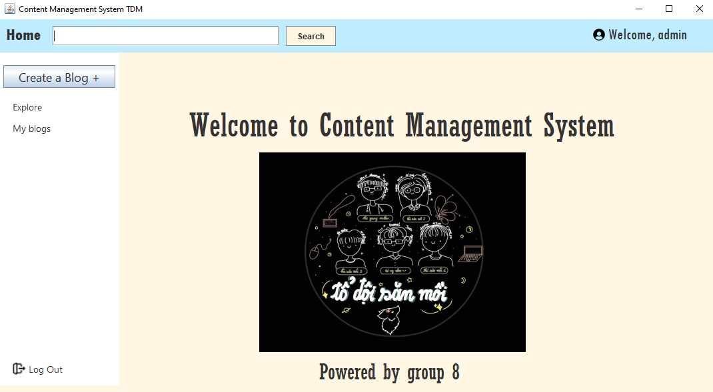
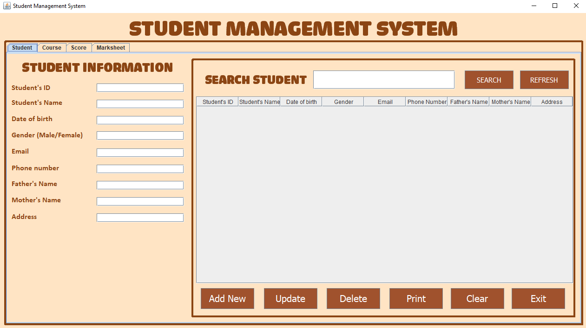

Developed and maintained scalable applications for managing hospital
systems. This application, featuring a user-friendly interface, helped the
administrator manage data for patients, medicines, medical checkups,
reports after checkups, and nancial earnings from checkups and hospital
medication.
Showing the use of data structures and algorithms in real-world problem
solving.
Programming language and tools: Java, JavaSwing, and SQL Server.
Content management system

Content management system with SQL Server, JavaSwing
Description
The Content Management System for a blog project involved developing a
content management system with several features, including account
creation, webpage design, content creation, and blog post publishing.
The website is published over both HTTP and HTTPS protocols, and blog
posts can be dynamically pulled from the database and displayed to visitors
using customizable templates designed by the blog owner.
Programming language and tools: Java, HTML, CSS, JavaSwing, and SQL Server.
Student management system

First project - Student management system with OOP course
Description
Developed and maintained applications for student management systems
involving enrolling courses and calculating the GPA of each student.
Gained pro ciency in multiple programming languages, including Java,
Java Swing, SQL, and some algorithms to calculate the GPA.